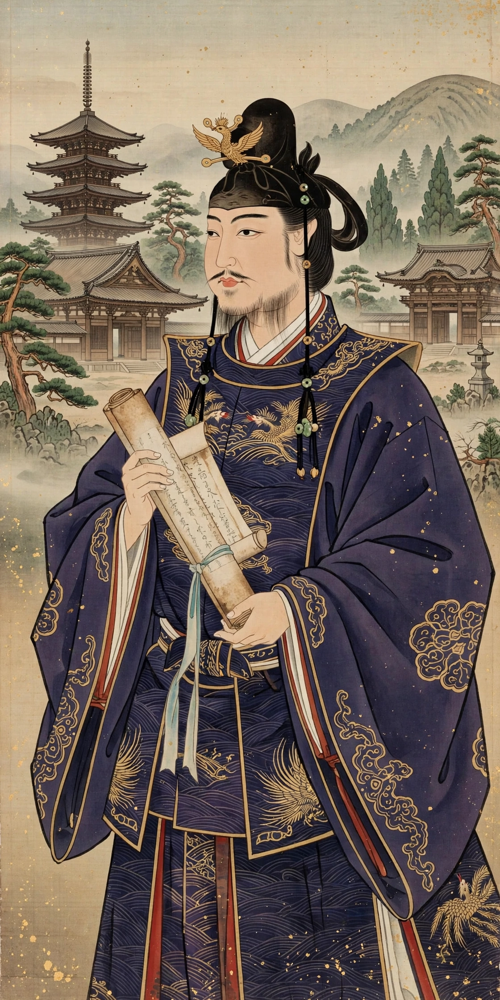

Prince Shōtoku (聖徳太子, 574–622), also known as Prince Umayado, was a semi-legendary regent and politician of the Asuka period in Japan who served under Empress Suiko. He is credited with promoting Buddhism and centralising government.
Son of Emperor Yōmei, Shōtoku became crown prince and regent in 593. Traditionally he is credited with the Twelve Level Cap and Rank System (603) and the Seventeen-Article Constitution (604), a moral and political code emphasising harmony (wa) and Confucian and Buddhist values. He sent official embassies to Sui China, famously a letter styling his ruler "Son of Heaven of the land of the rising sun" to the "Son of Heaven of the land of the setting sun."
Shōtoku founded temples including Shitennō-ji in Osaka and Hōryū-ji near Nara, and is credited with commentaries on Buddhist sutras. After his death he became the focus of a devotional cult, venerated as a manifestation of Kannon.
Most accounts come from the Nihon Shoki (720), compiled a century later; modern scholars debate how much of his attributed programme was his own work. His portrait long appeared on Japanese banknotes.